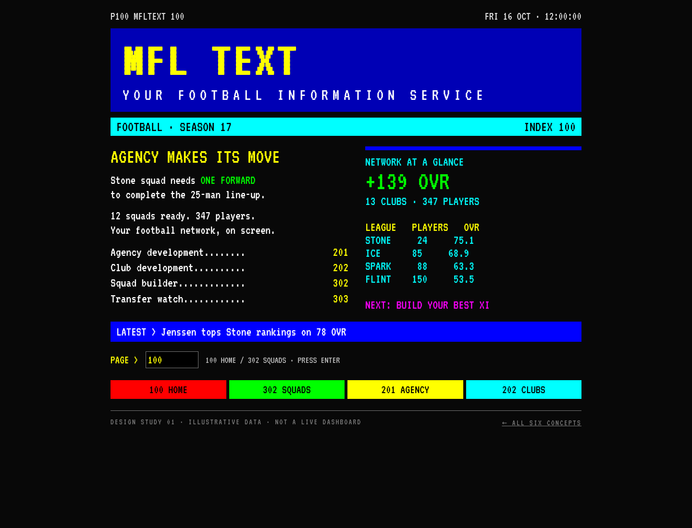
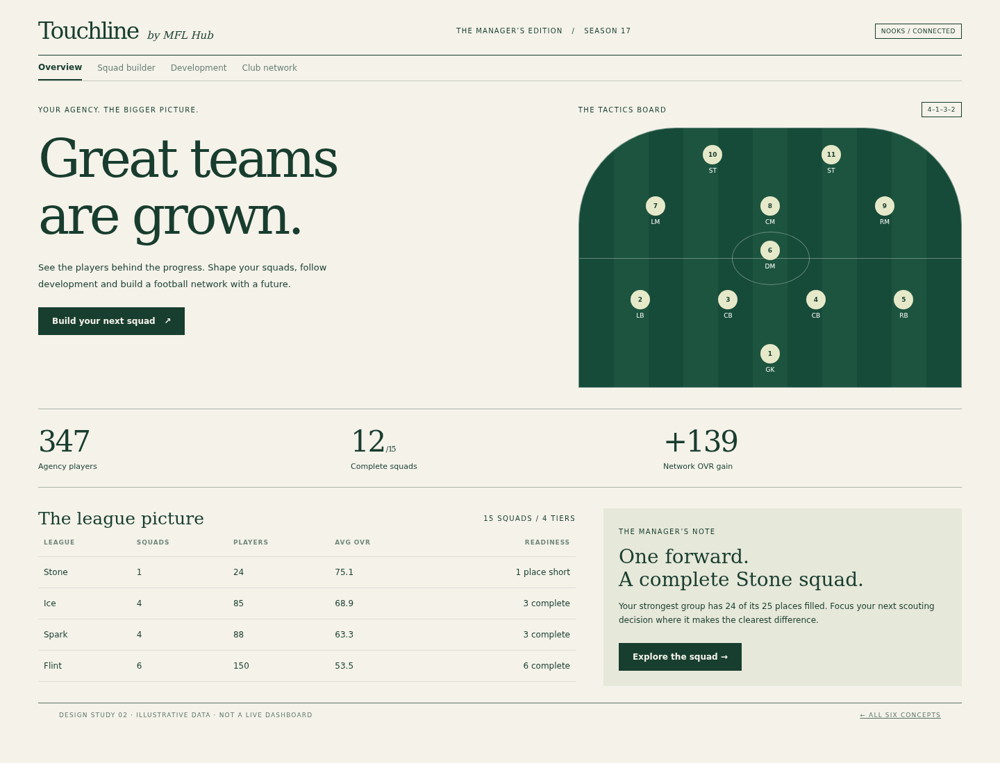
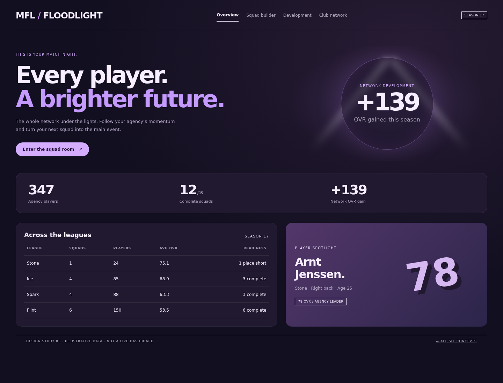
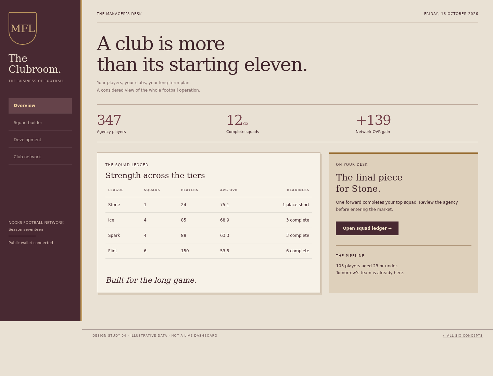
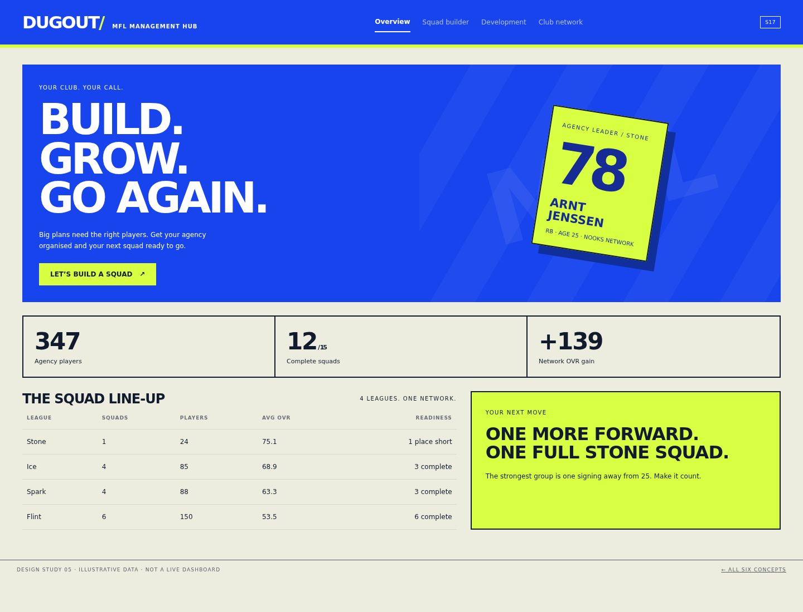
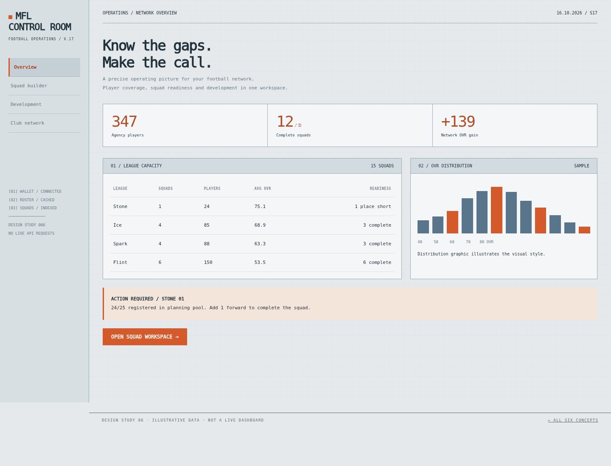

01 / UK teletext · 1988
MFL Text
Black screens, primary colours, pixel typography and numbered football pages.
Explore this concept ↗Mobile previewFrom UK television teletext to a modern scouting console. These are six distinct design directions, with different layouts, palettes and typography. Each preview includes working squad navigation and player filters, using illustrative data.
Download the design lookbook ↓
Black screens, primary colours, pixel typography and numbered football pages.
Explore this concept ↗Mobile preview
Ivory paper, forest green, oversized serif headlines and a tactical pitch.
Explore this concept ↗Mobile preview
Aubergine, electric lilac, luminous stadium lights and a broadcast scoreboard.
Explore this concept ↗Mobile preview
Warm stone, oxblood, brass accents and traditional serif typography.
Explore this concept ↗Mobile preview
Cobalt, acid yellow, sharp black lettering and oversized athletic typography.
Explore this concept ↗Mobile preview
Cool grey, signal orange, monospaced data and engineering grid lines.
Explore this concept ↗Mobile preview